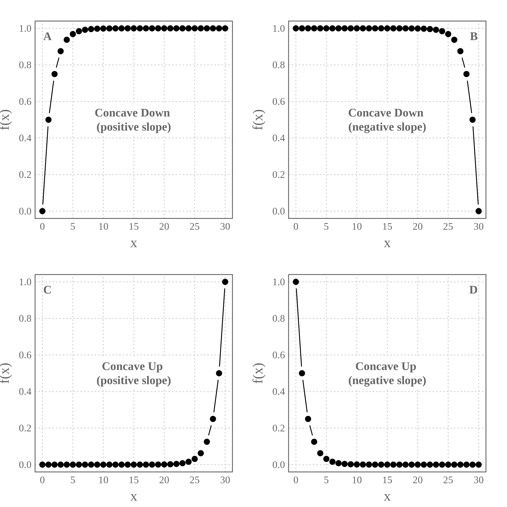
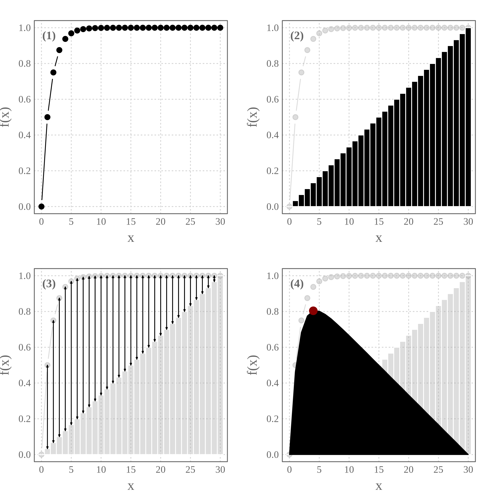
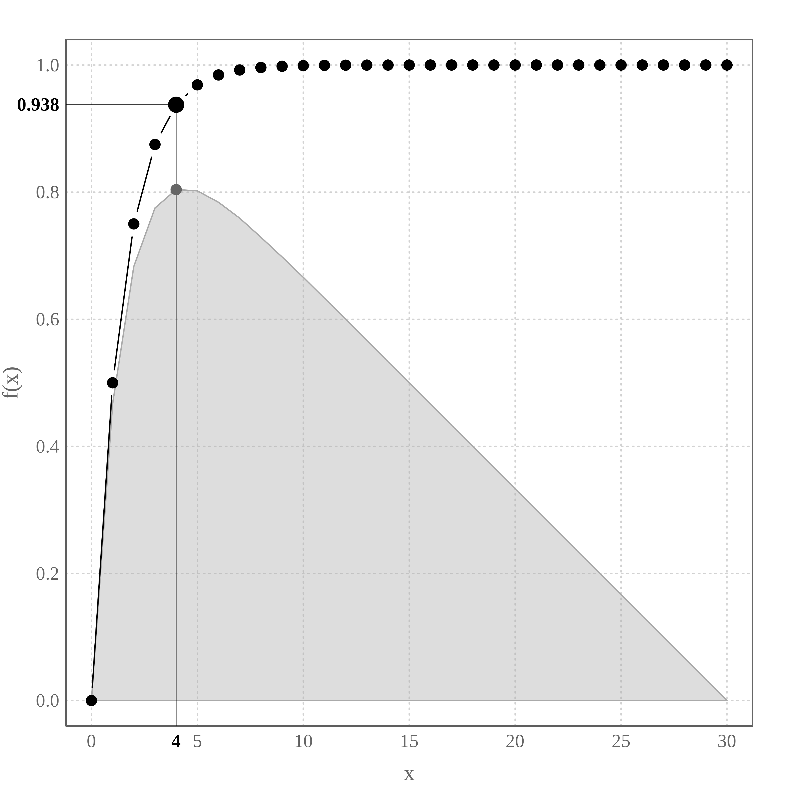
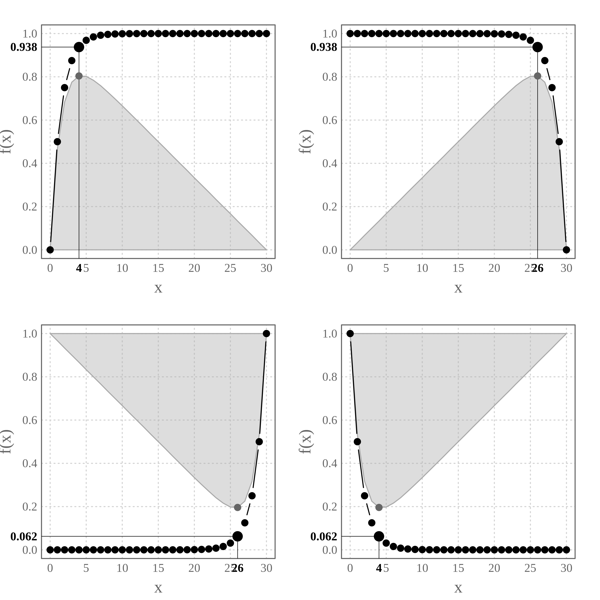

The goal of the package {elbow} is to implement the Elbow (or knee of a curve) method to detect the inflection point of a concave curve. More information on this method can be found below and on Wikipedia.
We can install the package {elbow} from GitHub with:
devtools::install_github("ahasverus/elbow") library(elbow)
Let’s take a look at the package content:
ls("package:elbow") ## [1] "elbow" "profiles"
The package contains two elements:
elbow() - the only function of the package used to detect inflection point;profiles - a reproductible example.First, we will load the profiles dataset and print a summary of its content:
data(profiles) str(profiles) ## 'data.frame': 31 obs. of 5 variables: ## $ x : int 0 1 2 3 4 5 6 7 8 9 ... ## $ concave_down_pos_slo: num 0 0.5 0.75 0.875 0.938 ... ## $ concave_down_neg_slo: num 1 1 1 1 1 ... ## $ concave_up_pos_slo : num 9.31e-10 1.86e-09 3.73e-09 7.45e-09 1.49e-08 ... ## $ concave_up_neg_slo : num 1 0.5 0.25 0.125 0.0625 ... head(profiles) ## x concave_down_pos_slo concave_down_neg_slo concave_up_pos_slo ## 1 0 0.00000 1 9.313226e-10 ## 2 1 0.50000 1 1.862645e-09 ## 3 2 0.75000 1 3.725290e-09 ## 4 3 0.87500 1 7.450581e-09 ## 5 4 0.93750 1 1.490116e-08 ## 6 5 0.96875 1 2.980232e-08 ## concave_up_neg_slo ## 1 1.00000 ## 2 0.50000 ## 3 0.25000 ## 4 0.12500 ## 5 0.06250 ## 6 0.03125
The profiles dataset is a data frame with 31 rows and the five following variables:
| Variable name | Description |
|---|---|
x |
A sequence from 0 to 30 (x-Axis) |
concave_down_pos_slo |
1st profile - Concave down with positive slope |
concave_down_neg_slo |
2nd profile - Concave down with negative slope |
concave_up_pos_slo |
3rd profile - Concave up with positive slope |
concave_up_neg_slo |
4th profile - Concave up with negative slope |
Let’s plot these four concave curves along the x sequence:

NB. In Clustering Analysis or Principal Component Analysis, we frequently meet the profiles A (a quantity increasing as the number of groups increases) and D (a quantity decreasing as the number of groups increases).
We are going to detect the inflection point of the profile A (Concave down with a positive slope). In Clustering Analysis, the x-Axis may represent the number of groups and the y-Axis the explained variance (R2).
The idea behind the Elbow method is to maximize a quantity (benefits) while reducing the costs (number of groups). Consequently, the inflection point will be the point from which the benefits become lower than the costs.
NB. In the profile D (Concave up with a negative slope) the objective is to minimize the quantity while reducing the costs.
How does it work?

From the profile (1), we apply a constant increase along the x-Axis to reach the maximum value on the y-Axis (2). Then, for each value on the x-Axis, we compute the difference between the two series (3) to generate the profile (4) (net benefits). The inflection point, in this case, corresponds to the maximum value on this new profile (red dot).
elbow()
This algorithm is implemented in the function elbow::elbow() which takes two arguments:
data - a two-columns data frame (x and y respectively);plot - a boolean. If TRUE (default) the curves are plotted.Let’s apply this function to detect the inflection point of the profile A.

What is the returned object?
class(ipoint) ## [1] "list" names(ipoint) ## [1] "x_selected" "data" print(ipoint) ## $x_selected ## [1] 4 ## ## $data ## x concave_down_pos_slo constant benefits ## 1 0 0.0000000 0.000 0.000 ## 2 1 0.5000000 0.033 0.467 ## 3 2 0.7500000 0.067 0.683 ## 4 3 0.8750000 0.100 0.775 ## 5 4 0.9375000 0.133 0.804 ## 6 5 0.9687500 0.167 0.802 ## 7 6 0.9843750 0.200 0.784 ## 8 7 0.9921875 0.233 0.759 ## 9 8 0.9960938 0.267 0.729 ## 10 9 0.9980469 0.300 0.698 ## 11 10 0.9990234 0.333 0.666 ## 12 11 0.9995117 0.367 0.633 ## 13 12 0.9997559 0.400 0.600 ## 14 13 0.9998779 0.433 0.567 ## 15 14 0.9999390 0.467 0.533 ## 16 15 0.9999695 0.500 0.500 ## 17 16 0.9999847 0.533 0.467 ## 18 17 0.9999924 0.567 0.433 ## 19 18 0.9999962 0.600 0.400 ## 20 19 0.9999981 0.633 0.367 ## 21 20 0.9999990 0.667 0.333 ## 22 21 0.9999995 0.700 0.300 ## 23 22 0.9999998 0.733 0.267 ## 24 23 0.9999999 0.767 0.233 ## 25 24 0.9999999 0.800 0.200 ## 26 25 1.0000000 0.833 0.167 ## 27 26 1.0000000 0.867 0.133 ## 28 27 1.0000000 0.900 0.100 ## 29 28 1.0000000 0.933 0.067 ## 30 29 1.0000000 0.967 0.033 ## 31 30 1.0000000 1.000 0.000
The element ipoint$data is returned to reproduce the graphic. The one we are interested in is ipoint$x_selected which returns the coordinate on the x-Axis (not the position on the data frame) corresponding to the inflection point.
ipoint$"x_selected" ## [1] 4 ipoint[["data"]][ipoint[["data"]][ , "x"] == ipoint[["x_selected"]], 1:2] ## x concave_down_pos_slo ## 5 4 0.9375
What about the other profiles?
profs <- colnames(profiles)[-1] par(mfrow = c(2, 2)) for (prof in profs) { elbow(profiles[ , c("x", prof)]) }

Please note that the elbow project is released with a Contributor Code of Conduct. By contributing to this project, you agree to abide by its terms.
Last updated: 2020/04/27